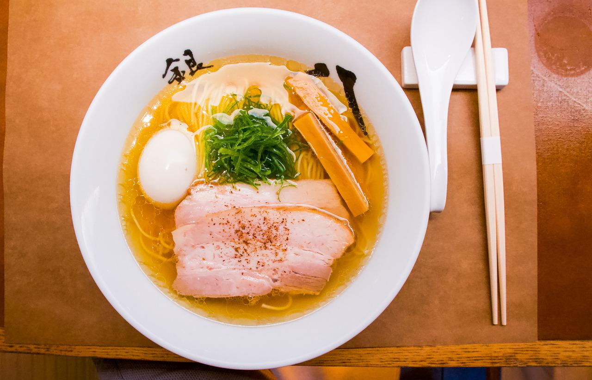

Tonkotsu Ramen Recipe

Delicious ramen served with pork broth served with egg, bamboo, noodles and chashu (pork)
Ingredients:
For the broth (make 4 servings)
- 3 ro 4 oz pork fat
- 2 cups chicken stock
- 2 cups dashi stock (you can substitute with chicken stock)
- 2 cups unsweetened soy milk, unsweetened cashew or unsweetened oat milk
For a Bowl of Ramen
- 1 portion fresh frozen or instant ramen noodles
- 3 to 4 tbsp tsuyu (Japanese soup base sauce) or chashu tare
- 1 green onion, chopped
- Handful beansprouts
- Handful black fungus
- 1 to 2 slices of chashu
- 1/2 to 1 ramen egg
- 1 clove garlic, optional
Instructions
- Place pork fat in a medium pot with enough water to cover pork. Bring it to boil over medium high then cook pork belly 5 to 7 minutes or until fully cooked. Cut pork fat into small chunks and place in a blender. Add chicken stock and blend high speed until smooth, about 1 to 2 minutes. Pour pork fat and chicken stock mixture back to now-empty-pot (rinse pot quickly then use) then add in dashi stock and unsweetened soy milk. Stir and bring it to simmer over medium heat. Also, bring another pot of water to boil to cook noodles and toppings.
- Meanwhile, let’s prepare ramen toppings.
Chop green onion. Slice black fungus into long thin strips. Prepare chashu by searing on a dry pan over high heat, torch or high broil for 3 to 5 minutes.
- When water is boiling, blanch bean sprouts for 1 minute then remove from water. Drain well and set aside. Next, blanch black fungus for 1 minutes then remove from water. Drain well and set aside. Finally, start cooking noodles. Fresh or frozen one will take only 2 minutes. Instant ramen noodles will take 3 to 4 minutes.
- While noodles are cooking, add tsuyu or chashu tare in a serving bowl. Carefully, pour 1 1/2 cup of broth we made earlier. Mix well. Drain cooked noodles well and add to bowl. Stir noodles to coat evenly with broth and arrange. Arrange toppings on top of noodles – beansprouts, black fungus, green onions, chashu and ramen egg. Lastly, to your taste, grate in a clove of garlic. This sharp spicy garlic will perfectly balance this thick rich broth. Enjoy!
Prep Time:5 minutes
Cooking Time: 15 minutes